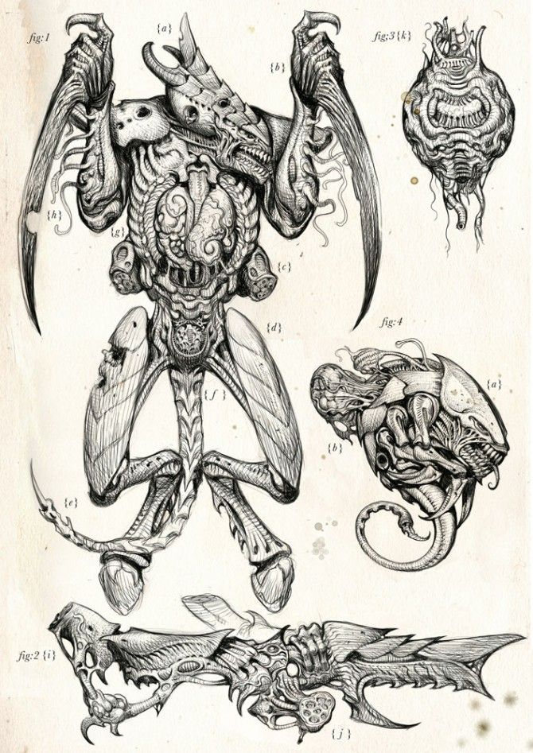
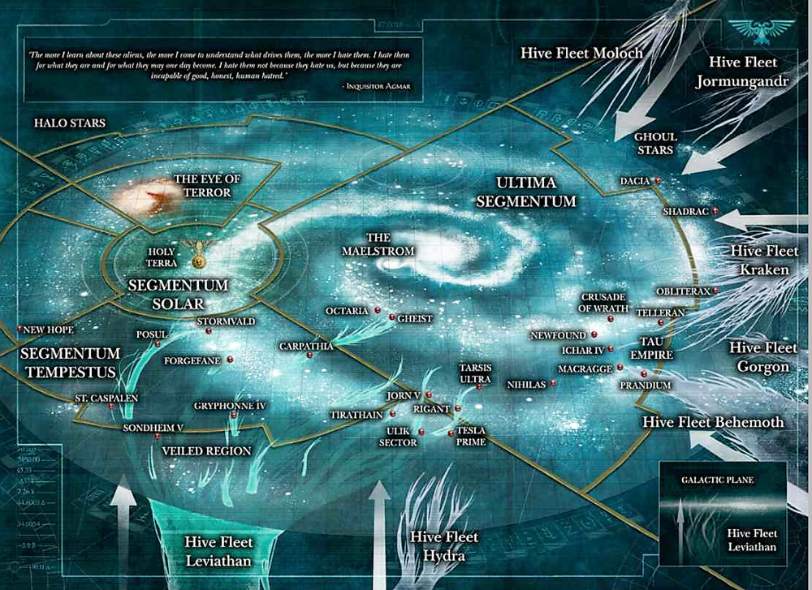

<<<<<TYRANID>>>>>
Diminutively called “the bugs" by most Guardsmen, the Tyranids are a super-organism comprised of countless creatures and forms which seem to share a consciousness. The first encounter is documented in 741.M41 on the Eastern Fringes, emerging from extra galactic space. They consume all biomass from any planet they invade, leaving behind only barren planets devoid of even most mineral wealth. These early encounters seem to have been intelligence gathering, as more recent attacks are more aware of the might of the Imperium.
